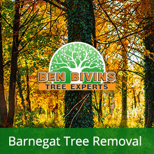
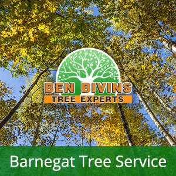

If you and your family are searching for tree removal in Barnegat or tree service in Barnegat, Ben Bivins has you covered. Ben Bivins Tree Service has been providing professional tree services to Barnegat for years.
Facts About Barnegat Tree Removal

Do you possess lifeless or unsightly trees which should be removed? Tree removal can be a high risk process which requires the right equipment and safety practices. Even though it might be tempting to eliminate a tree on your own from your Barnegat residence, it could be a decision that puts someone in jeopardy, without having the proper training. There can be many factors why you need a tree removal in Barnegat:- Tree is obstructing too much sunshine in your yard
- Tree is lifeless or detrimental and a potential safety risk
- Tree is overgrown and poses a danger if significant limbs drop
- Tree was harmed in a storm and is beyond the stage of preserving
- You are planning on renovations that will eventually damage the trees
- Tree is dropping lots of limbs, leaves, or pine needles
Ben Bivins Tree Experts is fully insured and licensed tree company. Don’t take the associated risk of hiring an uninsured tree company or relying on a friend to accomplish this type of work. Our team is skillfully qualified and our company has the appropriate credentials to ensure your Barnegat tree removal will be conducted in the safest and most effective way possible. Tree removal necessitates the use of serious machinery and hazardous equipment which should only be left to the pros. Leave it to the experts! Give us a call today for a quote on your Barnegat tree removal.
Tree Service in Barnegat NJ – A Look at Our Services

We carry out all aspects of Barnegat tree service. Some of these solutions include:- Tree Trimming – Are trees on your property growing out of control? Is your backyard lacking sunlight on account of an overgrown tree? Trimming a tree’s limbs can make a big difference and could allow you to maintain a tree you in any other case considered removing.
- Pruning – Keep your trees happy and healthy. Pruning consists of evaluating a tree’s health and making a decision to eliminate limbs selectively to enhance its health and longevity.
- Crown Reduction – We will decrease the scale of your tree’s cover with this method. Our crew will evaluate your trees and make recommendations to remove specific branches that will cut back canopy cover.
- Emergency Tree Service – Have you got a downed tree that requires immediate attention? Is there a tree which is on the verge of causing damage if not dealt with promptly? You may be a candidate for emergency tree service.
If you’re a Barnegat resident requiring tree service, call us today. Appointment time can vary according to weather, season and our current workload. We will give you a quotation and let you know dates available for service after evaluating your particular needs.
Your Source for Barnegat Firewood
It’s hardly surprising that a Barnegat tree removal company may have a surplus of firewood! If you are on the lookout for firewood for a wood burning stove or fireplace, contact us today. Firewood supply availability can vary during the year.